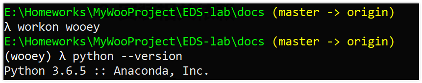
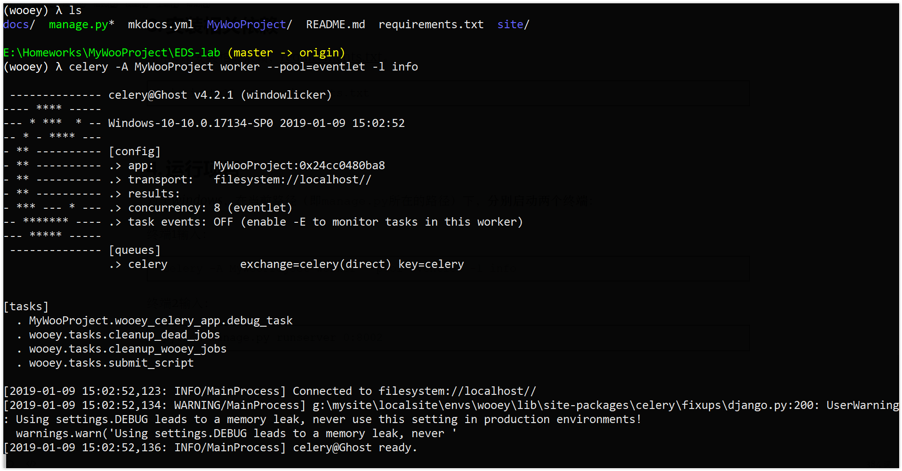
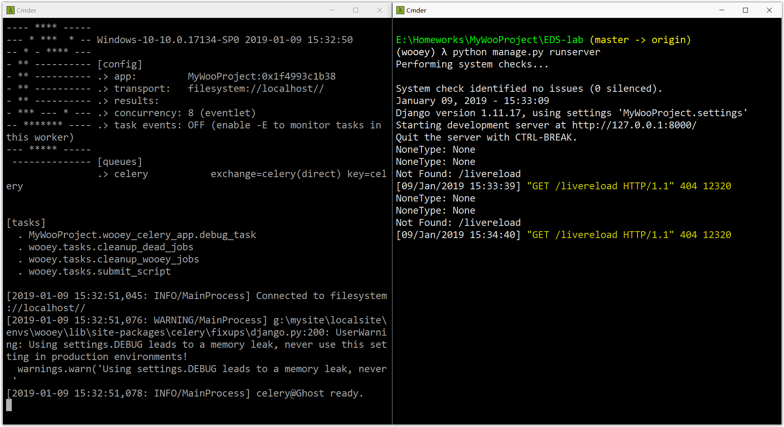
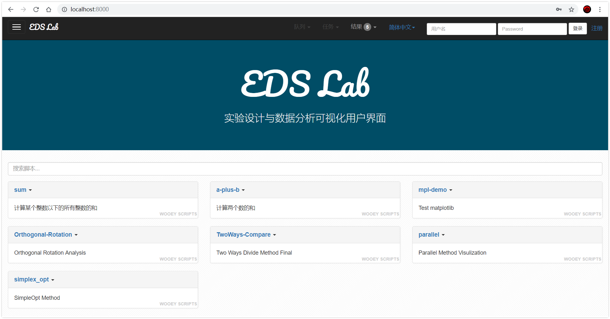
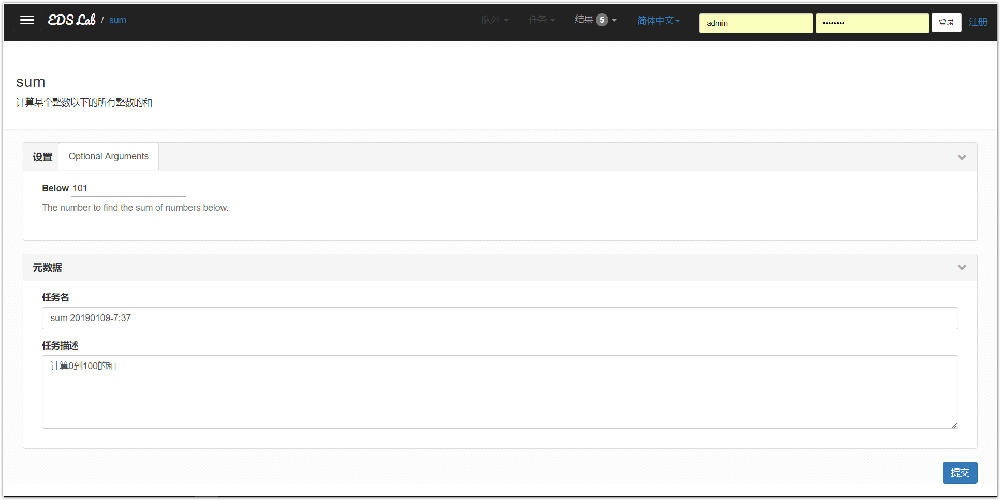

快速开始
0. 安装Python和相关依赖
Python- 推荐python3.6及以上-
pip- 推荐18.1及以上 -
其他：见文件
requirements.txt，内容如下，安装请见后文：
amqp==2.3.2
billiard==3.5.0.5
celery==4.2.1
Click==7.0
clinto==0.2.1
cycler==0.10.0
Django==1.11.17
django-autoslug==1.9.3
django-celery-results==1.0.4
dnspython==1.16.0
eventlet==0.24.1
greenlet==0.4.15
Jinja2==2.10
jsonfield==2.0.2
kiwisolver==1.0.1
kombu==4.2.2
livereload==2.6.0
Markdown==3.0.1
markdown-include==0.5.1
MarkupSafe==1.1.0
matplotlib==3.0.2
mkdocs==1.0.4
monotonic==1.5
numpy==1.15.4
pandas==0.23.4
pyparsing==2.3.0
pypiwin32==223
python-dateutil==2.7.5
pytz==2018.7
pywin32==224
PyYAML==3.13
scipy==1.2.0
seaborn==0.9.0
six==1.12.0
tornado==5.1.1
vine==1.1.4
wooey==0.10.0
1. 运行使用
* 创建虚拟环境（非必须，推荐）
为了防止项目工程的依赖和用户自带的python环境相冲突，例如python版本不一致。建议为工程创建虚拟环境，创建方法见virtualenv, 这里推荐使用virtualenvwrapper，一个更快捷的virtualenv的封装来创建python3的虚拟环境。
例如，使用virtualenvwrapper创建了名称为wooey的python3环境，然后在这个环境下运行本项目。

2. 下载工程代码
下载地址：EDS-lab
下载后解压，进入到EDS-lab路径下。
3. 安装相关依赖
使用pip安装相关依赖，requirements.txt。
pip install -r requirements.txt
4. 运行项目
对于windows，在当前路径（即manage.py所在的路径）下，分别启动两个终端：

终端1输入：
celery -A MyWooProject worker --pool=eventlet -l info
效果入上图所示。

终端2输入：
python manage.py runserver 0:8000
注：端口号可以任意指定。
对于Linux和其他操作系统，请查看这里。
5.本地查看项目
通过步骤5就构建了一个本地服务器来运行本工程。

使用浏览器，输入http://localhost:8000/,即可查看工程。
6. 运行实验脚本

点击脚本名称，输入相关参数，即可运行。例如上图是创建计算[0, 100)以内所有正数和的任务，点击提交。